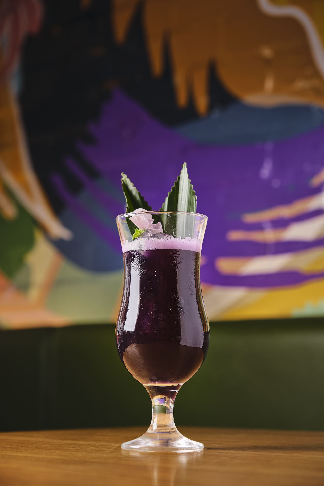
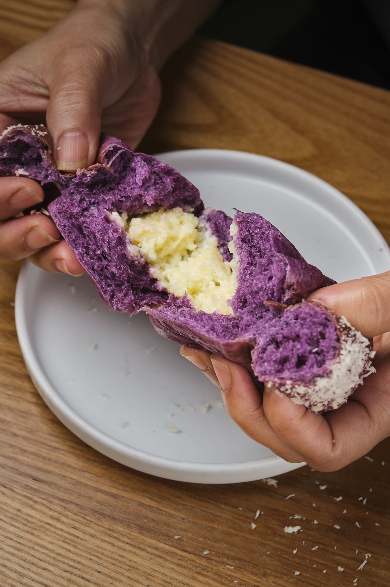
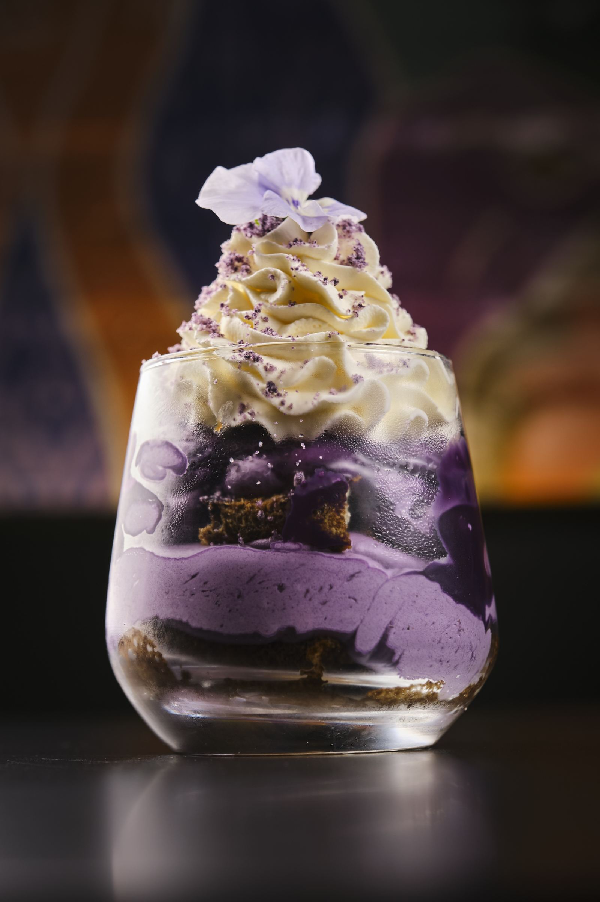
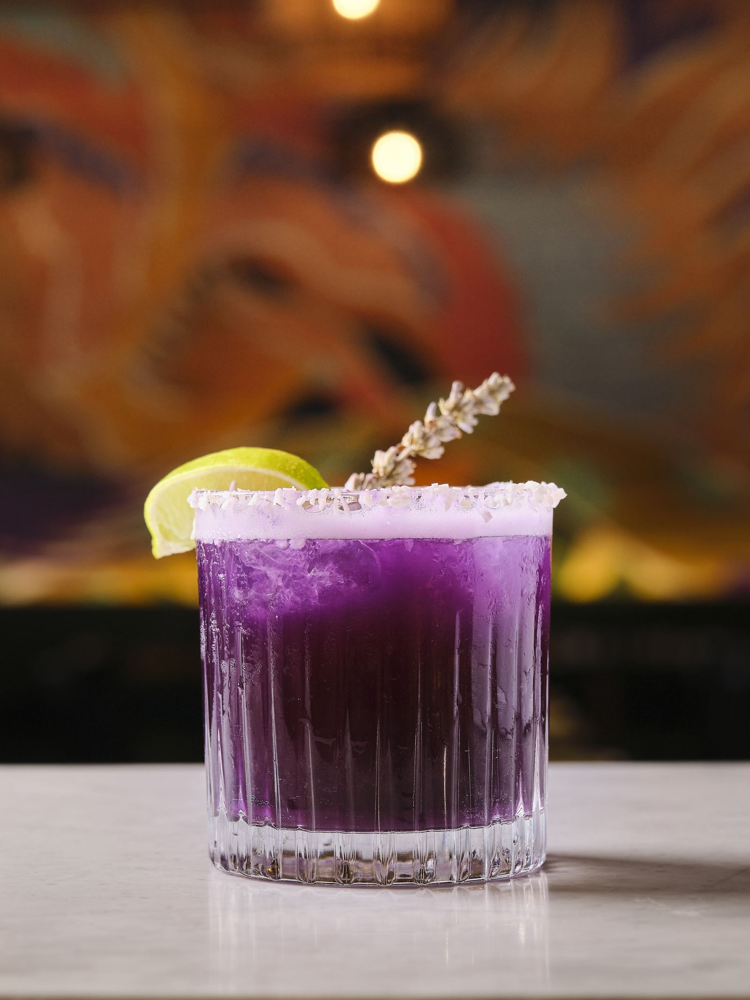

Ube Martini
Vodka, coconut, cranberry and ube. The drink that put us on the map — creamy, sweet, earthy and the exact colour of the room's best photo.
Bar · [PRICE]
The home of ube
Ube — say “oo-beh” — is a violet yam from the Philippines. Sweet, nutty, somewhere between vanilla, pistachio and white chocolate. At Kasa & Kin it's in everything from the first coffee to the last cocktail.
What it is
Ube (Dioscorea alata) is a purple yam grown across the Philippines. Boiled and mashed with milk, butter and sugar it becomes ube halaya — the jam every Filipino grandmother has a version of — and from there it goes into ice cream, halo-halo, cakes, bread and, in our case, cocktails.
The colour is real, not a dye. The flavour is gentle and nutty, which is why it works as well at 10am in a bread roll as it does at 10pm in a martini glass.

Everything ube

Vodka, coconut, cranberry and ube. The drink that put us on the map — creamy, sweet, earthy and the exact colour of the room's best photo.
Bar · [PRICE]

Our soft Filipino bread rolls, baked daily and filled with ube jam. Breakfast, elevenses and the box you take home.
Bakery · [PRICE]

Cut it and it pours. The signature from the window, in ube and in classic tsunami.
Patisserie & dessert · [PRICE]

Buttery brioche swirl topped with ube cream and cheese. Yes, cheese. Trust us.
Bakery · [PRICE]

Shaved ice, sweet beans, jellies, leche flan and a scoop of ube ice cream. The Filipino summer in a glass, all year.
Dessert · [PRICE]

Birthday, office, excuse. Whole cakes to pre-order for collection.
Pre-order · [PRICE]

Why we care
Ask our founder which ingredient she'd keep if she could only keep one and the answer doesn't change: ube. It's the taste of a Filipino childhood — birthday cake, Sunday jam, the ice cream you begged for — and it was almost impossible to find in London when we opened.
So we made it our thing. If you want ube in Soho, you come to Poland Street.
Ube, your way

The Ube Martini, at the bar or with dinner. Ask about the ube espresso martini when it's on.
Restaurant & Bar →
Pandesal, ensaymada and cheesecake by the slice, with a coffee, from 10am.
Bakery →
Pandesal boxes and whole cakes, in store or on Uber Eats.
Grab & Go →